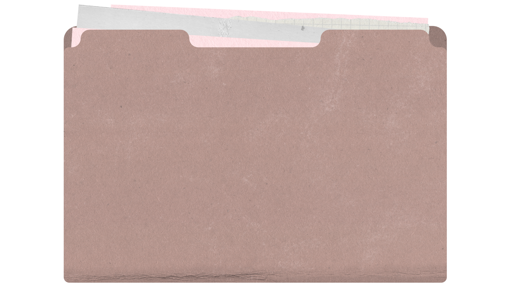

Welcome
Design-forward portfolio focused on clarity and intent.

Design-forward portfolio focused on clarity and intent.
A selection of projects focused on interaction, systems, and thoughtful UX decisions.
Project descriptions, visuals, and links will live here.
What shipped, what changed, and what impact the work had.
I design by balancing clarity, exploration, and constraint. My process adapts, but my principles stay consistent.
Understanding context, users, and constraints before committing to solutions.
Designing flows and behaviors that feel calm, intentional, and respectful of attention.
Reviewing outcomes, learning from friction, and refining decisions over time.
I’m a designer interested in perception, interaction, and how systems communicate intent.
A mix of design, experimentation, and reflective practice.
Calm interfaces, spatial interaction, and human-centered systems.